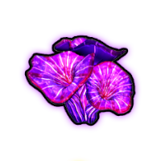

Resources
The currencies and pickups you collect during a run and spend on upgrades.
 Mycelium
Mycelium
The primary in-run currency, earned by defeating enemies and from pickups. Spent in the shop on skill Morphs.
 Biomass
Biomass
A secondary in-run resource used for higher-cost Morph purchases. Dropped by enemies and spawned by the Biomass interactable event.
 Amber
Amber
A secondary in-run resource used for higher-cost Morph purchases. Spawned by the Amber interactable event and granted by some artifacts.

Meta MyceliumA persistent currency collected from mushroom pickups during a run. Carries over between runs and is spent in the Hub to unlock new skills, maps, and characters.